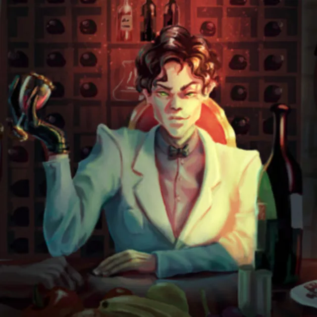

Giannis the Cut
Giannis the Cut, a fixer of the black market in Constantinople, is a figure of ill fame, sunk deep in smuggling and every manner of crime. He trades in stolen artifacts and antiquities, and moves in a world that touches the lowest reaches of the city — a man of doubtful morals, whatever his skill in the quiet arranging of things. Those who know him counsel caution: a ship's captain once warned Rufus Dimitrious to keep clear of any dealing that might set itself against Osman Hamdi Bey's principles touching the plunder of antiquities.
His reputation is a tangled one, poised uneasily between him and the law, and shot through with a keen awareness of the very heritage his trade so often despoils. The company, charged with the recovery of a stolen journal, saw that they must work their way into his affairs, for he stands among the chief men of the underworld, beside such as Hano "the Widow". He is no mere hired blade, but the spider at the centre of a labyrinth of crime, offering opportunity and danger in equal measure.
He is joined to the Andropoulos Estate, and deals in curios and antiquities. Giannis carries himself with the air of a man of wealth and consequence, displaying the lawful curiosities within his reach and offering marble statues for sale at 2,500 gold apiece. Diplomatic in the bargaining, he keeps a shrewd eye upon the crowded field of treasure-hunting, and marks the competition of one Hayriah.
In company he is given to banter and to jest — most of all over the doings of the Festival of Candles, such as the near loss of Chique Manu's ring to the animate shadows. He keeps his relations cordial, pressing drinks upon his guests and joining in the lighter talk; he owns the urgency of the affair of the Ghost of March, professes an interest in treasure-seeking, and shows himself ready to make common cause, so long as the terms bend to his advantage.
Of late he proposed a quarter share for his part, should Jean-Zera Mongé's crew bring results; well versed in the local trade of treasure, he hinted at a rivalry, and at his stake in the business of the Ghost of March and the city's unrest. A broker of valuable artifacts and things of history, shrewd and calculating, he looks for a handsome return, offering a fifth of his quarter-share in advance against the artifacts laid before him — which may run to books, a Malkoç Family Banner, and jewellery.
He has hired, besides, a band of treasure-hunters, which shows his reach and his interests to run well past the plain transaction; he passes for an authority in the recovery of treasure, his name coming up even in the matter of the undead troubling the region. In all, he answers to the type of the resourceful broker, bent upon turning the party's labours to his own profit whilst keeping his web of contacts within the underworld in good repair.
Beyond the black market, Giannis is bound up with Osman and linked to A Certain Community. His name has surfaced in the matter of a possible inquiry into corruption, a hint of his ties to powerful and to criminal circles alike. On one occasion the carriage-route brought Jean-Zera to a halt at Giannis's own gate and set her down there — a public association fit to stain her name; and indeed A Certain Community contrived to bind Jean-Zera to Giannis openly in men's eyes, which speaks to the weight he carries in the politics of the city. The mention of "Kavalan Pasha," the beleaguered governor of Egypt, in the same breath as Giannis suggests his hand in dealings of some intricacy — dealings that may complicate what is to come, and the fencing of artifacts above all.